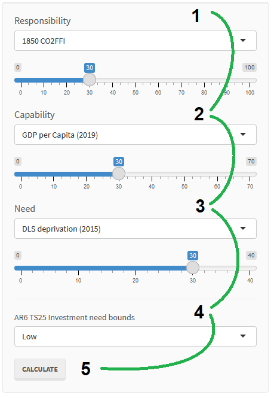

About this tool
This is the webapp accompanying Fairness considerations in global mitigation investments by Shonali Pachauri, Setu Pelz, Christoph Bertram, Silvie Kreibiehl, Narasimha D. Rao, Youba Sokona and Keywan Riahi, published in Science (2022), 10.1126/science.adf0067.

It lets you systematically explore 'fair' regional contributions to near-term (2020–2030) regional mitigation investment needs derived from global cost-effective mitigation pathways assessed by Working Group III of the IPCC AR6. You choose one indicator for each of three equity considerations — responsibility, capability and need — and weight them. The tool then determines the corresponding 'fair-share' regional contributions to the regional cost-effective investment needs in Figure TS.25 of the WGIII Technical Summary, and shows what inter-regional transfers would be needed to close the gap.
Inputs
- Responsibility. A higher weight means regions with larger historical emissions carry a proportionally larger share of finance contributions. Quantified with cumulative CO₂ from fossil fuels and industry (CO₂-FFI) over 1850–2019 (R1) or 1990–2019 (R2) — the dominant long-lived forcer, appropriate for a historical lens.
- Capability. A higher weight means wealthier, more capable regions carry a larger share. Quantified with per-capita GDP (C1) or per-capita capital stock (C2) in 2019, the year before the decade of analysis.
- Need. A higher weight means regions with higher deprivation or climate risk contribute a smaller share. Quantified as multidimensional deprivation in Decent Living Standards (N1; Rao & Min 2018, Kikstra et al. 2021) or acute multi-sector climate risk in 2030 (N2; Byers et al. 2018).
- Investment-need bounds. Lower or upper bound of regional cost-effective annual mitigation investment needs for 2020–2030 from Figure TS.25 of the IPCC WGIII AR6 Technical Summary.
Weights are relative: the three slider values are rescaled to sum to 100. Setting a slider to zero drops that consideration entirely; the indicator panels grey it out.
Method
Each indicator is first transformed into a regional share of global investment needs (the transformation is documented in the paper's supplementary materials; the resulting shares are shipped with this tool as data). The weighted sum of the three selected shares is each region's fair-share allocation. Multiplying by the global total of cost-effective needs gives the region's fair-share contribution in billion USD per year.
fair-share contribution − cost-effective need < 0 → needs met by inter-regional inflow
A region whose fair share exceeds its own needs finances the surplus elsewhere; a region whose needs exceed its fair share has the gap met by inter-regional contributions. The 'Flows' tab draws these as a Sankey diagram through a notional inter-regional fund. 'Recent average within-region investment' is shown for comparison and is not part of the allocation.
Investment needs are in USD PPP 2015; GDP used for the 'share of GDP' view is 2019 USD PPP 2017. That mismatch is inherited from the source data and is immaterial for the comparisons shown.
Regions
Regions follow the IPCC WGIII R10 definitions. Country-level membership is in the paper SI.
SAPSouth-East Asia and developing PacificMEAMiddle EastAPDAsia-Pacific DevelopedAFRAfricaSASSouthern AsiaLACLatin America and CaribbeanEEAEastern Europe and West-Central AsiaEASEastern AsiaEUREuropeNAMNorth America
Publication
Pachauri, S., Pelz, S., Bertram, C., Kreibiehl, S., Rao, N. D., Sokona, Y., & Riahi, K. (2022). Fairness considerations in global mitigation investments. Science, 378(6624), 1057–1059. 10.1126/science.adf0067
Affiliations: International Institute for Applied Systems Analysis; Potsdam Institute for Climate Impact Research; Germanwatch e.V.; Yale School of the Environment; South Centre; University College London.
Replication archive (citeable): 10.5281/zenodo.7308573 · GitHub: setupelz/repl_2022_fairmitigation
Other climate equity tools
A large climate-equity literature informs discussions of carbon-budget sharing and equitable emissions reductions. These tools apply various equity approaches and are generally distinct from our focus on near-term mitigation investment finance. Listed without endorsement and without claim to completeness.
- Climate Equity Reference Calculator
- Climate Equity Monitor
- Climate Action Tracker — fair-share rating
- Paris Equity Check
- ETH Climate Calculator
- fair-shares — our later Python library for fair-share carbon-budget allocations (see also the Carbon Debt Explorer)
Source and citation
Code for this site: github.com/setupelz/repl_2022_fairmitigation, the paper's replication archive (MIT). If you use results from the tool, cite the paper above. Questions: pelz@iiasa.ac.at.